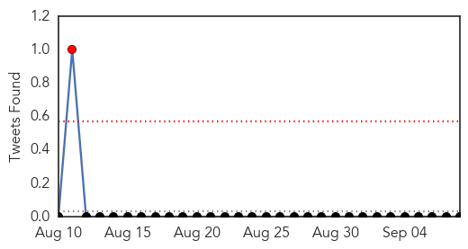
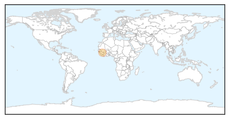
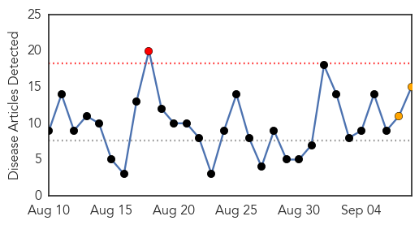
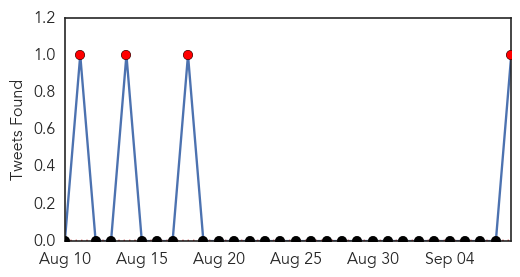
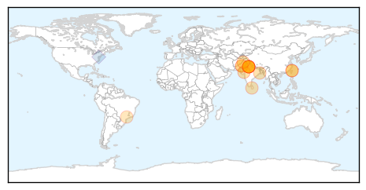

Meningitis
30-Day Web Trend
2 alerts, 0 warnings

30-Day Twitter Trend
1 alerts, 0 warnings

Article Locations
Article Confidences

Top Articles:
Top Tweets:
-
No tweets found for Sep 08, 2015
Dengue Fever
30-Day Web Trend
1 alerts, 2 warnings

30-Day Twitter Trend
4 alerts, 0 warnings

Article Locations
Article Confidences

Top Articles:
- 0.997
- ‘Give leave to sick students’
- 0.984
- Over 425 dengue cases reported in first week of September itself
- 0.984
- Taiwan escalates efforts as dengue fever cases near 6,000
- 0.963
- Delhi: Cases of Dengue fever have touched 1,259, highest in five years
- 0.963
- Dengue fever cases surge in southern Taiwan
- 0.952
- Centre mulls banning rapid dengue diagnostic kits
- 0.947
- Dengue cases double in 2015
- 0.942
- Centre mulls banning rapid dengue diagnostic kits
- 0.941
- Policies to prevent :::DailyFT
- 0.936
- Dengue Cases Climb To 1,259
- 0.915
- Telenor Research Deploys Big Data Against Dengue
- 0.914
- Telenor Research Deploys Big Data Against Dengue
- 0.774
- Oxitec’s genetically engineered mosquitoes and how they are battling mosquito-borne diseases
- 0.726
- A disease is on the phone
- 0.653
- Government plans to ban sale of dengue test kits
Top Tweets:
- 0.829
- Yes, lots on emerging vector-borne diseases, e.g. tick-borne pathogens, West Nile virus, dengue, chikv et al :) https://t.co/gcpxhe4UWB